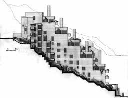
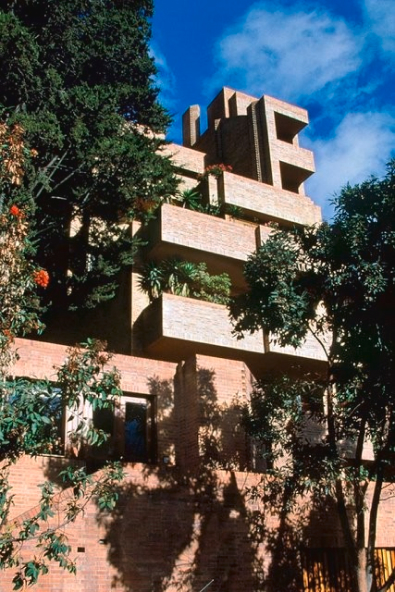

Rogelio Salmona
Proyecto
Alto de los pinos
 
Es un conjunto residencial
del centro de Bogotá,
construido en la zona oriental
de la localidad de
Santa Fe, en el barrio
La Macarena. Está compuesto por
tres edificios de ladrillo
diseñados entre 1965 y 1970.
El conjunto rodea la Plaza de
toros de Santamaría, a cuya
forma circular responde su
diseño curvo. Su silueta
evoca asimismo los cerros
Orientales de la ciudad.